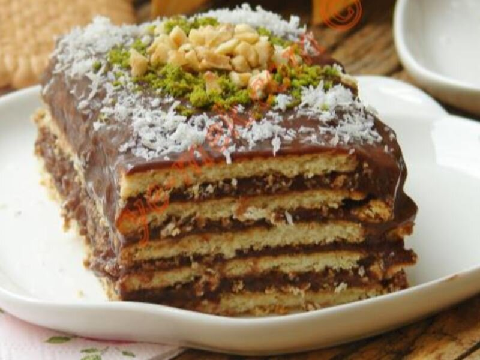

Malzemeler:
- 3 su bardağı süt
- 1 paket petibör
- 1 paket puding
Bisküvili Pasta Nasıl Yapılır?
-
Öncelikle sütü bir tencere içerisine alın ve kaynatın.
-
Süt kaynamadan önce içerisine pudingi ekleyin ve topaklanmaması için devamlı karıştırın
-
Puding koyu bir kıvam aldığında ocağın altını kapatın.
-
Bisküvileri tepsiye sırayla dizin ve pudingi üzerine dökün. Spatulayla düzelttikten sonra tekrar bisküvileri dizin.
-
3 kat olacak şekilde aynı işlemi uygulayın. Dilerseniz üzerini hindistan cevizi ve ceviz ile süsleyebilirsiniz.
